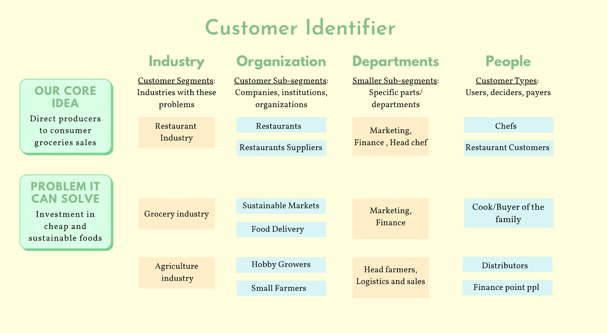
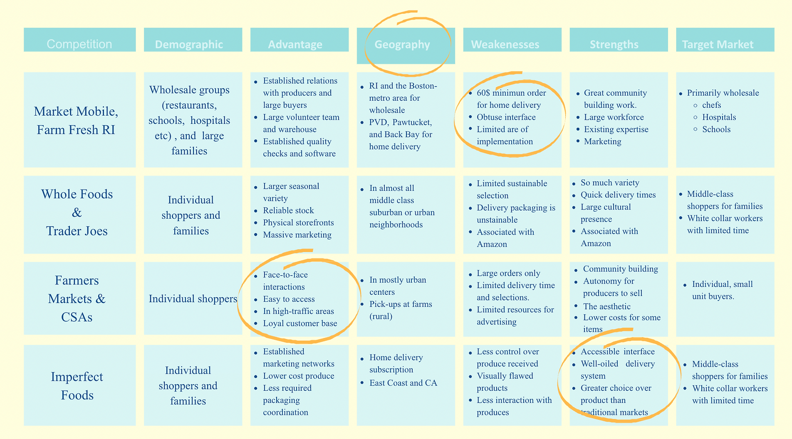
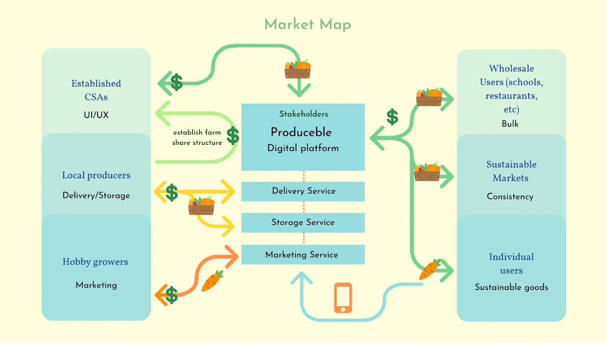
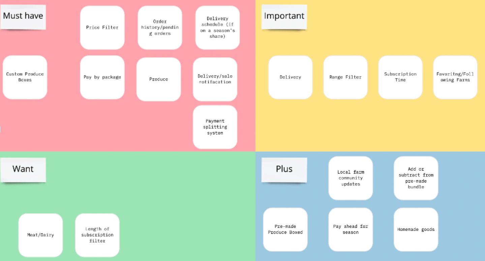
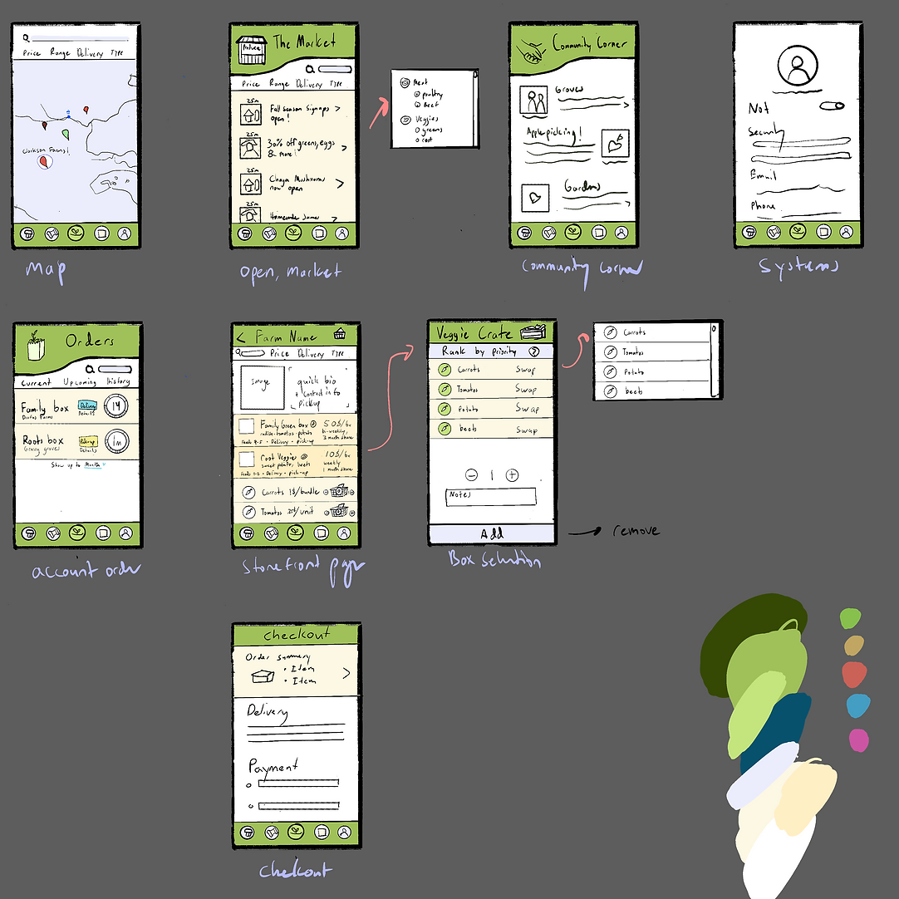
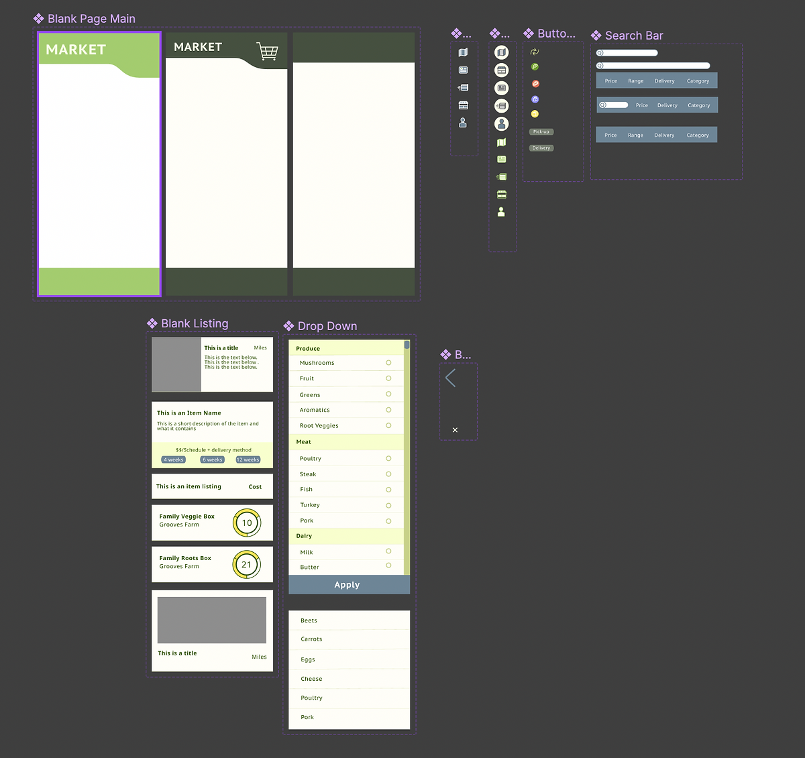
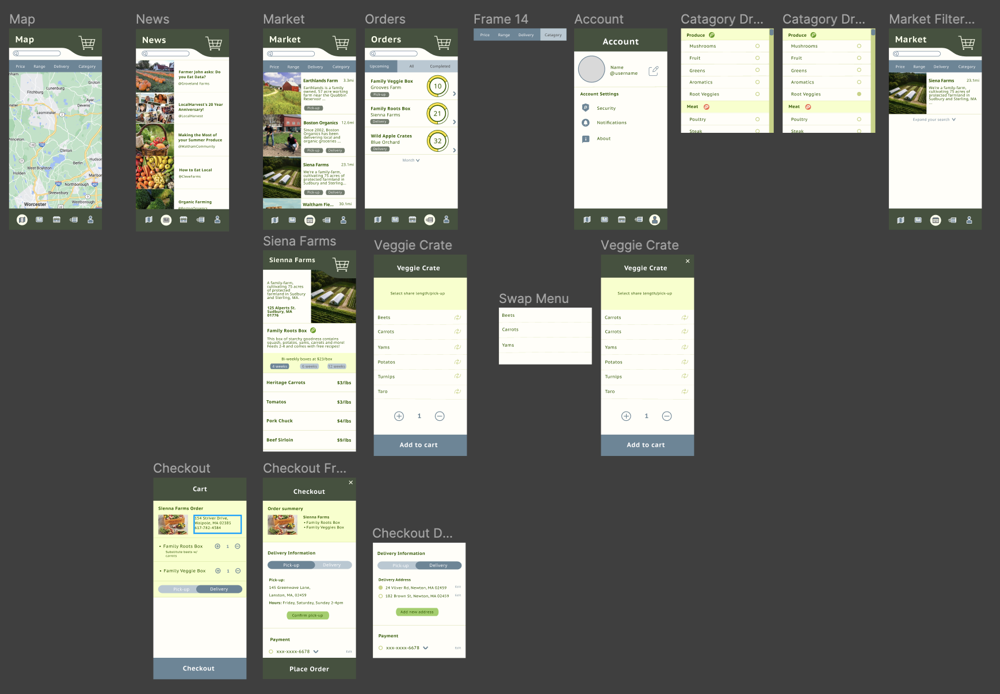

Case Overview
My Role
Team Leader, UI/UX designerBackground
Sustainably-minded individuals have limited and inconsistent access to fresh, locally-sourced produce of different varieties in Rhode Island. On the other hand, local producers have limited funds and human resources to sell directly to consumers, and instead are forced to rely on middlemen who might not align with their interests. This project seeks to explore the different stakeholders in the New England Local produce market and define a potential system for farmers to easily set up direct-to-consumer sales avenues.Key Project Structure
- Customer segment identification
- Customer discovery
- Create a minimum viable product and low-fi wireframes
- Conduct user testing with low-fi prototype
- Create high fidelity prototype
Key Research Questions
- What is the current state of New England Farming? Who are the stakeholders and what are their priorities?
- What do current sales avenues look like for local producers? What are the general barriers to entry?
- What are the current buying habits of households in the New England Region?
- What are the structures of currently established CSAs (community-supported agriculture)?
Methodology & Tools
- Qualitative interviews
- Competitor analysis
- Usability Test
- Miro
- Figma
Key Project Outcome
A comprehensive high-level product navigation and use system and a high fidelity wireframe of the minimum viable product defined by market research.Exploratory User Research
We started this process by conducting secondary research and interviews with urban agriculture professors were used to create a rough outline of different customer segments for a direct-to-consumer produce sales platform. Then each member of the team identified a few individuals from each segment and conducted a 15-30 min exploratory interview, from which they were then referred to more potential contacts. Interview notes were then consolidated and analyzed together.
Customer Identification
{kind=link}
Key Takeaways
User Patterns
- Consumers purchase groceries as units (either families or roommates)
- Consumers lack consistent access to sustainable produce and goods
- Consumers primarily prioritize the freshness of goods and convenience
- Customers will pay more for locally-sourced products
- Small farmers find it extremely difficult to secure shelf space in regular grocery stores
User Pain Points
Consumers
- High cost of fresh produce
- Low convenience and variety
Farmers
- High cost/risk to set up CSAs (direct-to-consumer distribution)
- Outpaced by large farms
- Restricted by retailers who demand high and consistent supply
What are other companies doing in this sector?
{kind=link}
Creating a initial MVP
Based off of both market and user research, our team came together and brainstormed an initial product overview that addressed both the user pain points we identified and fit into the current market niche. We then finalized our problem/solution statement and market map (shown below).
Produceble is an online platform that helps small local farmers who want to sell their produce fairly by eliminating barriers to entry and connecting them directly to consumers whilst also helping local families and college students who want to easily purchase fresh, locally sourced produce by minimizing price and delivery time and providing them a convenient, accessible delivery option.
Market Map
{kind=link}
Designing the Consumer Facing Interface
Based off of the product overview, Produceble would require two main sets of interfaces: the consumer-side and the seller-side. For this prototype, we wanted to prioritze the consumer side so we could do more specific user-testing down the line. Using the previous customer identification research, I conducted a focus group to nail down more specifc application features.
Prioritization Map
{kind=link}
After this exercise, I created several rough wireframes of a mobile display of Produceble.
Wireframes
{kind=link}
Using these static frames, I then conducted a few user tests centered on the primary user flow, which is to find a farm, build your cart and check out. During these tests, I made notes about any points of friction the user may have experienced. These notes were then used to make changes to the final high-fidelity prototype.
Design Systems
{kind=link}
To create the high-fidelity prototype (mobile format), I first created a design system with page, button, and icon variants that would be compliant with WCAG 3. Then I created the general layout and main features using my design system according to the architecture outlined and tested in the wireframe. After building out each frame, I started connecting frames via interactions.
Design System
High-Fidelity
{kind=link}
Wireframes
I first approached the challenge of redesigning Yan's online menu with two main issues in mind: the
aforementioned usability findings, and to make the new design responsive
across desktop, tablet, and mobile screen sizes. In particular, since the original website prioritized
online ordering
and menu parsing, I expanded the menu.

The original website prioritized online ordering and menu parsing, however the layout was too cramped to be effective, therefore I expanded the menu. Additionally, since Yan’s is pick-up only, other high-priority information would be not only the hours but also the location, which was highlighted in a sidebar. Lastly, because in the original website, clicking into a category would obscure other menu options, I opted to go with a horizontal tabbed menu for which there is a nested vertical scroll page -therefore you can both maintain your categorical location in the menu while also looking at specific items.
Figma Protoype
Try out this flow!
- Get a root vegetable box from Sienna Farms.
- Replace the beets with carrots, check out.
- In check out, select delivery, then select pick-up and check-out.